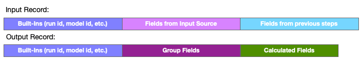

Aggregate Step
This step summarizes records using grouping and a variety of aggregation functions applied to one or more data values. The step must receive all records in order to produce the groups and aggregate before passing the summarized records to the next step. This usually produces far fewer outputs than inputs.
Configuration
To configure an Aggregate step, provide at least one of each of the following.
- Aggregate fields - One or more calculated values.
- Grouping fields - One or more fields that will form the summary groups.
See also: About Stage Steps